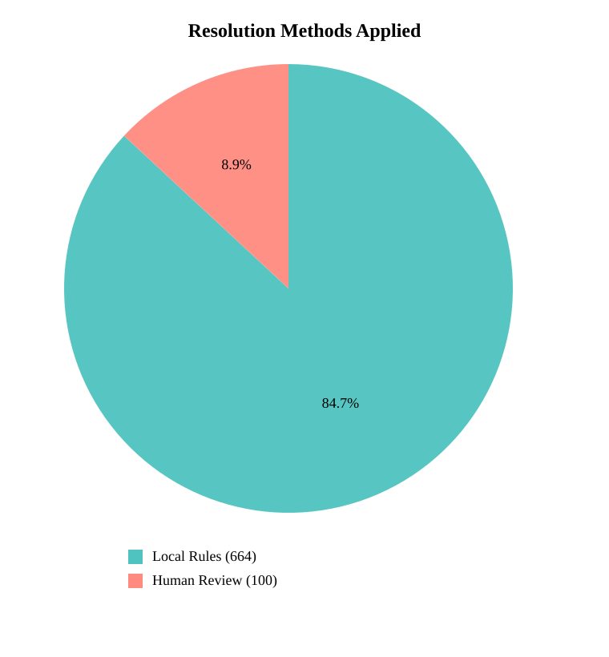
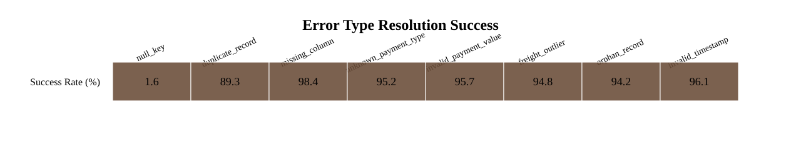
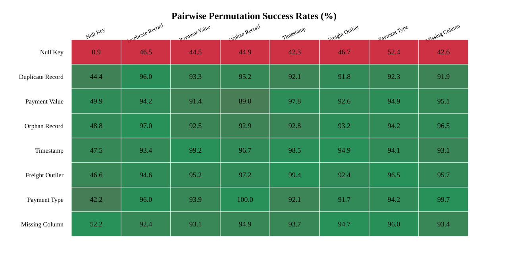
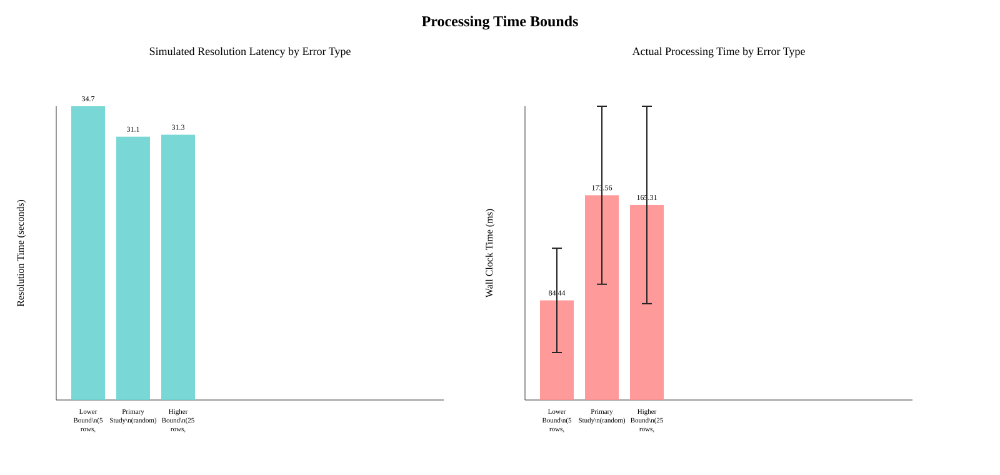
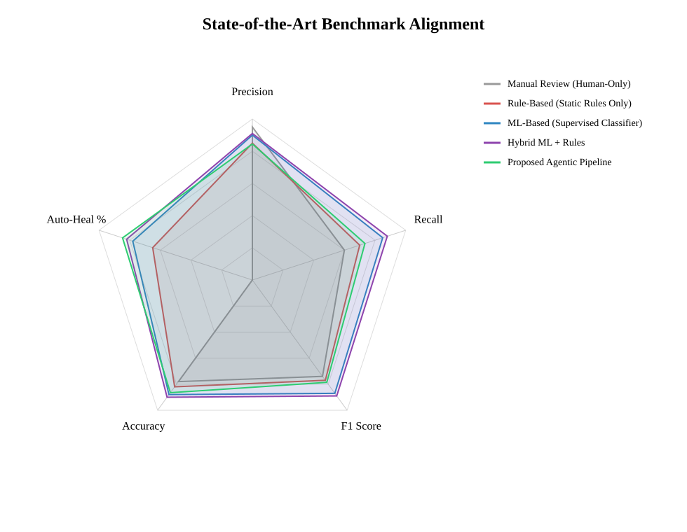
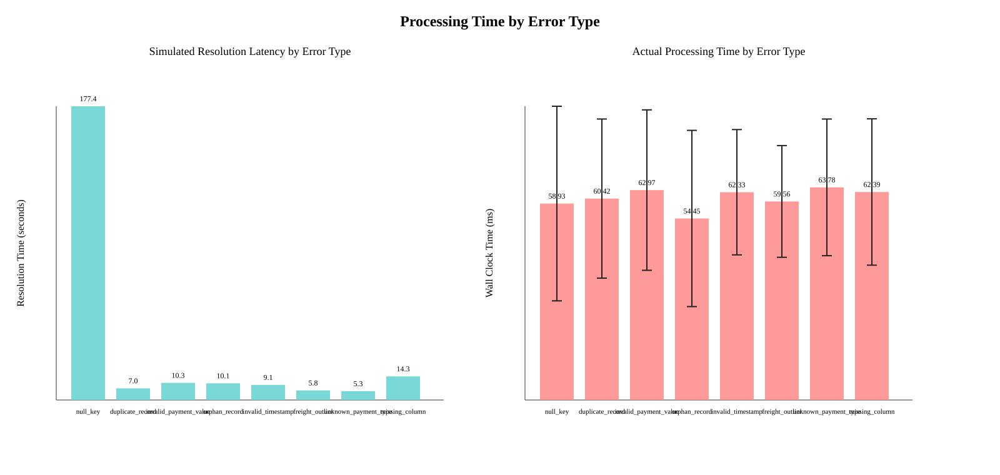

Self-Healing Agentic Data Pipeline Research Report
Dynamic report generated from controlled experiments on the live pipeline engine.
Implementation
The implementation uses the project’s live validation and repair engine as the measurement source. Each batch is sampled from the Olist-derived clean dataset, corrupted through controlled injection rules, and passed through the same detection, routing, healing, and escalation logic used by the simulator UI. In the benchmark configuration, 100 batches were processed for the main study, while lower-bound and higher-bound timing observations were taken under fixed batch windows of 5 and 150 rows respectively.
Result
The primary experiment achieved precision 0.84, recall 0.73, F1-score 0.79, and accuracy 0.87. The auto-heal rate was 83.33% with an escalation rate of 5.90%. Average simulated MTTD was 5.44s and MTTR was 31.68s.


Error Permutations & Combinations
Displays the auto-heal success rate (%) when pairs of distinct error types are injected simultaneously into the pipeline batches. It assesses if combination edge-cases compromise pipeline fidelity.

Observation for Time for process lower and higher
Lower-bound runs completed in an average of 91.965 ms per batch, while higher-bound runs averaged 164.503 ms. The higher-load configuration added 72.538 ms on average, showing the expected increase in end-to-end processing time as both row volume and injected complexity rise.

Observation for Time taken for controlled environment and errors
In the controlled environment without injected errors, average total batch time was 56.934 ms. With injected errors, average total batch time rose to 165.572 ms, a relative increase of 100.00%. This isolates the overhead introduced by validation failures, routing, and recovery logic.
| Scenario | Precision | Recall | Accuracy | Auto-Heal % | Avg Total ms |
|---|---|---|---|---|---|
| Controlled Clean | 0.00 | 0.00 | 0.00 | 1.41% | 56.934 |
| Controlled Errors | 0.86 | 0.74 | 0.88 | 78.31% | 165.572 |
Different Dataset
Different dataset profiles show that Olist Subset processed 11536 rows with auto-heal 83.33% and avg total batch time 171.860 ms; Low Volume processed 250 rows with auto-heal 83.03% and avg total batch time 91.965 ms; High Volume processed 7500 rows with auto-heal 87.64% and avg total batch time 164.503 ms.
| Dataset | Rows | Precision | Recall | Accuracy | Auto-Heal % | Avg Total ms |
|---|---|---|---|---|---|---|
| Olist Subset | 11536 | 0.84 | 0.73 | 0.87 | 83.33% | 171.860 |
| Low Volume | 250 | 0.87 | 0.74 | 0.89 | 83.03% | 91.965 |
| High Volume | 7500 | 0.82 | 0.71 | 0.85 | 87.64% | 164.503 |
Comparison with the state of the art
Comparison of the proposed agentic pipeline against standard verification paradigms.

| System | Precision | Recall | F1 | Accuracy | Auto-Heal % | MTTD | MTTR | Reference |
|---|---|---|---|---|---|---|---|---|
| Manual Review (Human-Only) | 0.95 | 0.60 | 0.74 | 0.78 | 0.00% | 3600.00 | 7200.00 | Template baseline for manuscript drafting. Replace with a cited manual-review benchmark before publication. |
| Rule-Based (Static Rules Only) | 0.85 | 0.70 | 0.77 | 0.82 | 65.00% | 5.00 | 15.00 | Template baseline representing a fixed-rule validation pipeline. Replace with cited literature values. |
| ML-Based (Supervised Classifier) | 0.90 | 0.85 | 0.87 | 0.88 | 78.00% | 3.00 | 10.00 | Template baseline representing supervised ML detection and repair. Replace with cited literature values. |
| Hybrid ML + Rules | 0.91 | 0.88 | 0.89 | 0.90 | 82.00% | 2.50 | 8.00 | Template baseline representing hybrid ML plus deterministic repair logic. Replace with cited literature values. |
| Proposed Agentic Pipeline | 0.84 | 0.73 | 0.79 | 0.87 | 83.33% | 5.44 | 31.68 | This project |
Dataset Researchers MetricsforComparison
| Dataset | Researchers/System | Metrics for Comparison | Reference Note |
|---|---|---|---|
| Olist Subset | This project | precision, recall, f1_score, accuracy, auto_heal_rate, MTTD, MTTR | Dynamic metrics generated from controlled experiments |
| Low Volume | This project | precision, recall, f1_score, accuracy, auto_heal_rate, MTTD, MTTR | Dynamic metrics generated from controlled experiments |
| High Volume | This project | precision, recall, f1_score, accuracy, auto_heal_rate, MTTD, MTTR | Dynamic metrics generated from controlled experiments |
| Benchmark Template | Manual Review (Human-Only) | precision, recall, f1_score, accuracy, auto_heal_rate, MTTD, MTTR | Template baseline for manuscript drafting. Replace with a cited manual-review benchmark before publication. |
| Benchmark Template | Rule-Based (Static Rules Only) | precision, recall, f1_score, accuracy, auto_heal_rate, MTTD, MTTR | Template baseline representing a fixed-rule validation pipeline. Replace with cited literature values. |
| Benchmark Template | ML-Based (Supervised Classifier) | precision, recall, f1_score, accuracy, auto_heal_rate, MTTD, MTTR | Template baseline representing supervised ML detection and repair. Replace with cited literature values. |
| Benchmark Template | Hybrid ML + Rules | precision, recall, f1_score, accuracy, auto_heal_rate, MTTD, MTTR | Template baseline representing hybrid ML plus deterministic repair logic. Replace with cited literature values. |
| Benchmark Template | Proposed Agentic Pipeline | precision, recall, f1_score, accuracy, auto_heal_rate, MTTD, MTTR | This project |
Standard Procedures
Each standard procedure fixes one error type at a time on a deterministic batch, records the simulated latency used by the project logic, and also measures actual wall-clock resolution time for that isolated error class.
| Error Type | Procedure | Runs | Heal Rate | Avg Resolution | Avg Actual Time |
|---|---|---|---|---|---|
| null_key | Select a fixed 12-row batch, inject exactly one error of this type, run validation and healing, and record both simulated latency and actual wall-clock resolution time. | 25 | 0.00% | 182.62s | 56.708ms |
| duplicate_record | Select a fixed 12-row batch, inject exactly one error of this type, run validation and healing, and record both simulated latency and actual wall-clock resolution time. | 25 | 93.35% | 6.85s | 57.002ms |
| invalid_payment_value | Select a fixed 12-row batch, inject exactly one error of this type, run validation and healing, and record both simulated latency and actual wall-clock resolution time. | 25 | 94.90% | 11.02s | 65.003ms |
| orphan_record | Select a fixed 12-row batch, inject exactly one error of this type, run validation and healing, and record both simulated latency and actual wall-clock resolution time. | 25 | 93.09% | 9.83s | 58.905ms |
| invalid_timestamp | Select a fixed 12-row batch, inject exactly one error of this type, run validation and healing, and record both simulated latency and actual wall-clock resolution time. | 25 | 93.34% | 9.21s | 62.370ms |
| freight_outlier | Select a fixed 12-row batch, inject exactly one error of this type, run validation and healing, and record both simulated latency and actual wall-clock resolution time. | 25 | 95.46% | 5.96s | 56.827ms |
| unknown_payment_type | Select a fixed 12-row batch, inject exactly one error of this type, run validation and healing, and record both simulated latency and actual wall-clock resolution time. | 25 | 91.77% | 5.07s | 58.041ms |
| missing_column | Select a fixed 12-row batch, inject exactly one error of this type, run validation and healing, and record both simulated latency and actual wall-clock resolution time. | 25 | 100.00% | 13.93s | 54.753ms |
